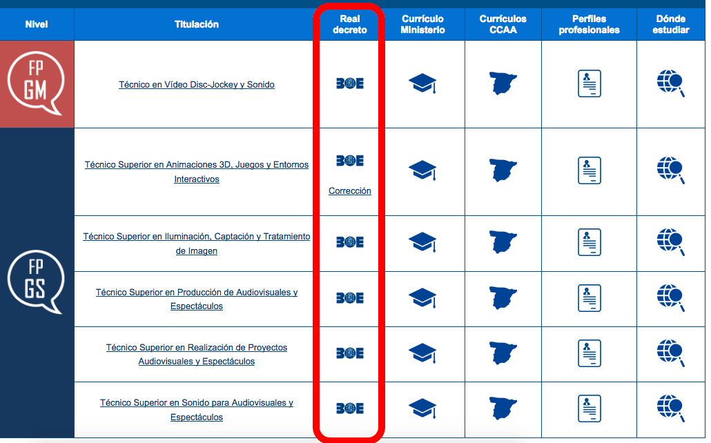

¿Qué son los Resultados de Aprendizaje en FP?
Los resultados de aprendizaje son conocimientos, destrezas, habilidades y competencias que esperamos que el alumno adquiera. A la hora de diseñar una programación didáctica para Formación Profesional, lo primero que debemos saber es que este nivel educativo tiene sus propias características, diferentes a niveles inferiores.
Definición de resultados de aprendizaje
Los resultados de aprendizaje son conocimientos, destrezas, habilidades y competencias de FP que esperamos que el alumno adquiera. Los planteamos a principio de curso, en la programación de aula y, gracias a una serie de actividades, contenidos, etc., dirigimos a alumno hacia esos resultados.
El hecho de plantear resultados de aprendizaje (RA), ¿quiere decir que, automáticamente, los alumnos los conseguirán? La respuesta es no. Por lo tanto, los RA nos sirven de referencia en la evaluación. Con ellos, sabremos en qué medida cada aprendiz ha alcanzado los resultados esperados.
Según la publicación Terminology of European education and training policy. A selection of 100 key terms, los resultados de aprendizaje son:
Conjunto de conocimientos, destrezas y/o competencias que una persona ha obtenido y/o es capaz de demostrar al término de un determinado proceso formativo formal, no formal o informal.
Fuente: adaptado de Cedefop 2004
Resultados de aprendizaje y objetivos
Según el Real Decreto 1147/2011, de 29 de julio, por el que se establece la ordenación general de la formación profesional del sistema educativo, un módulo formativo está formado, entre otros elementos, por unos objetivos expresados en resultados de aprendizaje. Esto quere decir que entre ambos elementos hay una estrecha relación. Si te vas a cualquier currículo de FP, verás cómo los objetivos y los RA son casi idénticos.
Objetivo
Construir la banda sonora definitiva de un proyecto audiovisual, realizando el montaje en directo o editado, así como los procesos de postproducción y acabado del proyecto sonoro, interpretando el guion técnico de sonido, para la consecución de los objetivos comunicativos del proyecto.
RD 1682/2011
Resultado de aprendizaje
Realiza el montaje de la banda sonora de productos audiovisuales (cine, vídeo, televisión y multimedia), aplicando técnicas de montaje y evaluando la correspondencia entre los objetivos del proyecto y los resultados obtenidos (Decreto 11/2014 – Asturias). Al ser Fromación Profesional, que está claramente enfocada a la práctica, los objetivos se formulan en términos de resultados de aprendizaje. Es decir, los RA y sus correspondientes criterios de evaluación nos dicen en qué grado los alumnos han logrado esos objetivos. Así, se dibuja un línea que une estos dos apartados de la programación. Uno está al principio del proceso de enseñanza-aprendizaje (los objetivos) y otro al final (los resultados de aprendizaje). Gracias a esta peculiaridad, resulta muy sencillo relacionar objetivos y RA, y, en consecuencia elaborar unidades didácticas integradas dentro de una programación didáctica en cascada.
Resultados de aprendizaje y contenidos
Volviendo al RD 1147/2011, se establece que los contenidos «se agruparán en bloques directamente relacionados con los resultados de aprendizaje».
Sea cual sea el módulo formativos para el que programas, en el currículo vas a encontrar una lista con bloques de contenidos.
Igual que pasaba con los objetivos, es fácil relacionar los RA con los contenidos. De esta manera, vamos diseñando una programación docente global y coherente. Así ayudas al tribunal a entender mejor tu planteamiento, porque todo tiene sentido en conjunto, y también te será más cómodo defenderla, pues un apartado te llevará a otro fluidamente.
¿Dónde econtrar los resultados de aprendizaje para FP?
El camino más sencillo para saber qué RA debes añadir a tu programación es irte al protal todofp.es y allí buscar «títulos de FP» > «por familias» > «LOE». Ahí seleccionas la familia que te corresponda y te llevará a la página en la tienes todo lo que necesitas. En el Real Decreto del ciclo, en su Anexo I, tienes todos los resultados de aprendizaje de tu módulo.

✍️ Algunas comunidades autónomas establecen sus propios RA. En caso de que sea así, son estos los que deben guiarte. Si un Real Decreto (nivel nacional) es modificado por un Decreto o una Orden (a nivel autonómico), prevalece este útlimo. Mira bien ambos documentos y tenlo en cuenta.

Mis 10 consejos para preparar la programación
Los resultados de aprendizaje en la programación didáctica
Para terminar, solo queda por señalar qué debes hacer con los RA una vez que ya los has encontrado en la legislación. Simplemente, debes copiarlos y pegarlos en tu documento, en el apartado de evaluación. Si lo deseas, puedes hacer un cuadro resumen con objetivos, bloques de contenidos, resultados de aprendizaje y unidades didácticas. Seguro que el tribunal lo tiene en cuenta y suma puntos a tu nota.


Buenas, en un vídeo comentabas que el docente puede crear resultados de aprendizaje ¿En qué normativa viene reflejado eso? Gracias.
Hola
¿ Hay que aprobar todas las RA en junio para superar el módulo?
Gracias
Sí
¿Para superar cada RA hay que superar TODOS sus criterios de evaluación asociados?
Gracias de antemano =)
Hola, Lolo! Solo los criterios mínimos (si los hay) o llegar al 50% del RA. No es necesario superarlos todos.
Hola, ¿podrías decirme en que ley, texto, artículo, etc puedo apoyarme para defender esa postura? Hablando de FP.
Gracias y un saludo.
Hola, ¿puedes indicarme cómo puedo defender esa postura con alguna ley, RD, etc,?
Gracias y un saludo